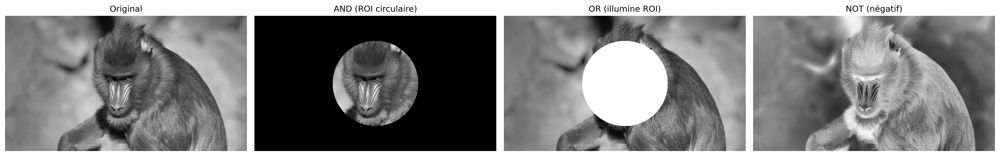
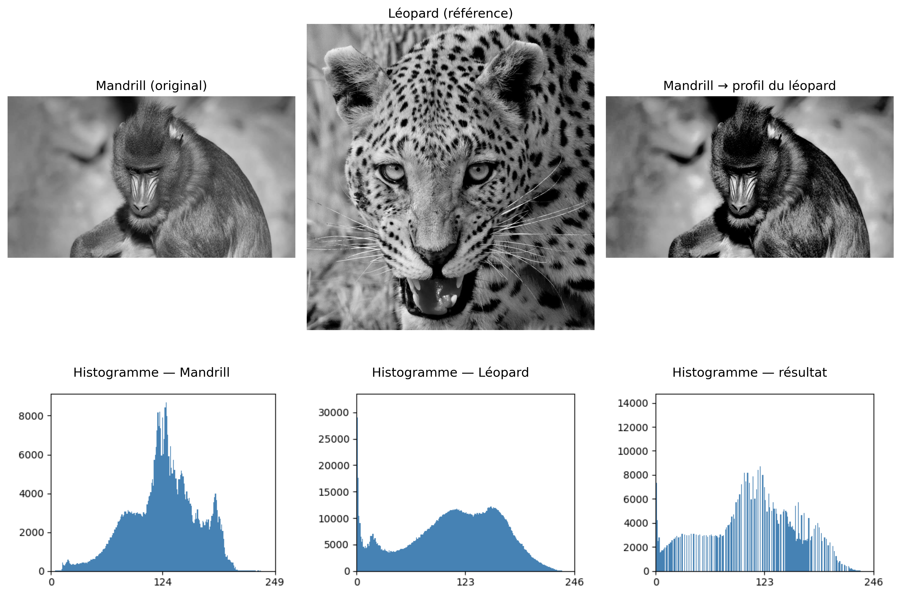
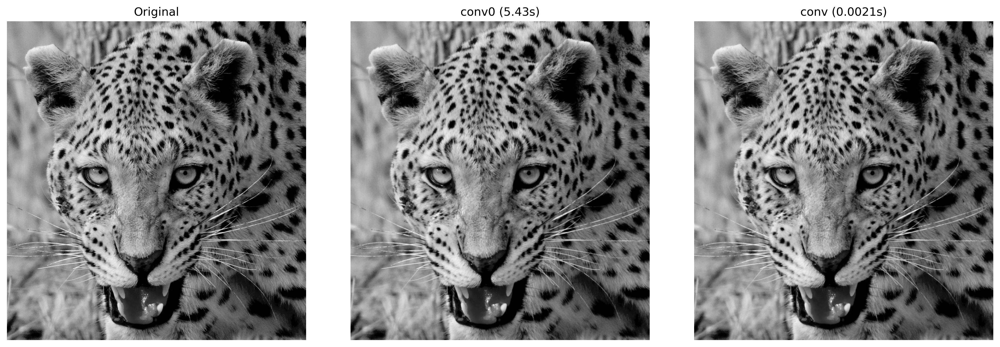
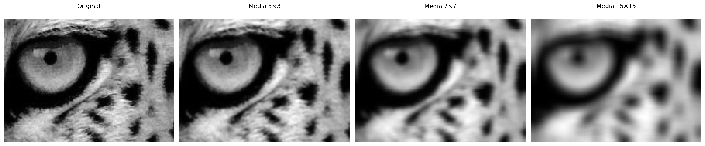
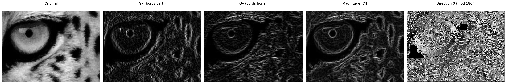
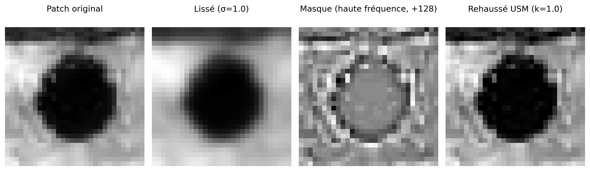
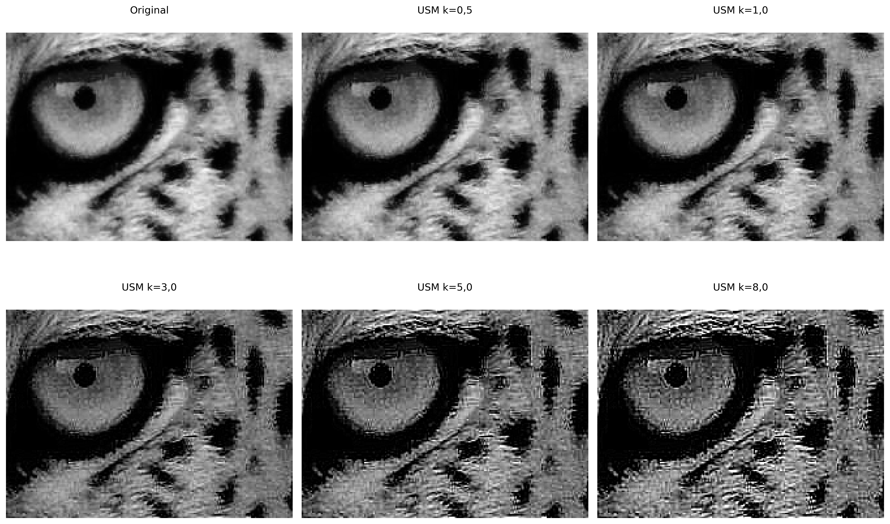

3Opérations Spatiales : Intensité, Histogramme et Filtrage
Ce chapitre approfondit le traitement d’images dans le domaine spatial, en partant de la manipulation directe des pixels et des histogrammes pour le rehaussement de contraste, jusqu’à l’application de filtres locaux par convolution pour le lissage, la réduction du bruit et la détection de contours. L’objectif est de développer l’intuition mathématique et computationnelle qui sous-tend une grande partie des algorithmes modernes de Vision par Ordinateur.
3.1 Objectifs
À la fin de ce chapitre, vous serez capable de :
Manipuler l’intensité et les pixels : Effectuer des opérations arithmétiques saturées (mm.addm, mm.subm) et des opérations logiques bit à bit (mm.band, mm.bor, mm.bnot) pour la combinaison et la sélection de régions d’intérêt (ROI), et appliquer l’alpha blending (mm.blend) pour la fusion pondérée d’images ;
Traiter les histogrammes : Interpréter l’histogramme comme un diagnostic tonal, appliquer l’égalisation globale (mm.equalize) et adaptative (CLAHE), et réaliser la spécification d’histogramme pour le transfert de profil tonal entre images ;
Comprendre les fondamentaux spatiaux : Comprendre le voisinage, le padding des bords, et la différence entre la corrélation croisée (mm.conv) et la convolution — y compris pourquoi des noyaux asymétriques comme Sobel produisent des résultats distincts dans les deux opérations ;
Appliquer le filtrage de lissage : Utiliser le filtre de moyenne (mm.conv avec noyau uniforme) et le filtre gaussien (cv2.GaussianBlur) pour la réduction du bruit, en comprenant l’avantage de la pondération radiale et de la séparabilité gaussienne ;
Appliquer le filtrage de rehaussement : Utiliser le laplacien (\(w_4\) et \(w_8\)) pour le rehaussement isotrope des contours, l’opérateur de Sobel pour le gradient directionnel (\(G_x\), \(G_y\), magnitude et direction), et l’Unsharp Masking pour l’amplification contrôlée des hautes fréquences par le paramètre \(k\) ;
Utiliser les filtres d’ordre : Appliquer le filtre médian (cv2.medianBlur) pour l’élimination efficace du bruit sel et poivre, en comprenant pourquoi sa nature non linéaire et sa robustesse aux valeurs aberrantes le rendent supérieur aux filtres linéaires dans ce scénario ;
Résoudre des problèmes pratiques : Enchaîner les techniques dans des pipelines de prétraitement (ex. : CLAHE → Gaussien → Canny) et utiliser les fonctions de la bibliothèque morph.py (mm.conv, mm.histImg, mm.equalize, mm.drawImageKernel) pour l’analyse et la visualisation didactique de chaque étape.
3.2 Opérations au Niveau d’Intensité
Le niveau le plus élémentaire de traitement d’images agit directement sur les valeurs des pixels, sans considérer le voisinage. Ces opérations — appelées transformations ponctuelles (point operations) — sont les plus rapides sur le plan computationnel et constituent la base de techniques plus complexes.
Formellement, une transformation ponctuelle peut être décrite comme :
\[
g(x,y) = T[f(x,y)]
\tag{3.1}\]
où \(f(x,y)\) est l’image d’entrée, \(g(x,y)\) est la sortie et \(T\) est une fonction appliquée à chaque pixel individuellement.
3.2.1 Préparation de l’environnement pratique
Le bloc suivant charge le module morph.py du dépôt.
Comme objet d’étude tout au long de ce chapitre, nous utiliserons les images de vie sauvage présentées dans les Figure 3.1 et Figure 3.3.. À partir de celles-ci, nous explorerons les opérations spatiales sur l’intensité, les histogrammes et le filtrage, en analysant leurs effets sur le rehaussement, le lissage, la réduction du bruit et la détection de contours, afin de comprendre les fondements mathématiques et informatiques du TNI.
Figure 3.1: Mandrill (Mandrillus sphinx) photographié en environnement naturel en Afrique du Sud. L’image a une résolution de 500 px et contient des métadonnées EXIF avec des coordonnées GPS approximatives (-26.20473, 28.22662). Crédit : Carlos Guilherme Rodrigues (CC BY-SA 3.0).
3.2.2 Operações Aritméticas
As operações aritméticas entre imagens são amplamente utilizadas em PDI para combinar, comparar ou realçar informações. A subtração de imagens é especialmente poderosa para detectar diferenças entre dois quadros — por exemplo, na remoção de fundo estático em câmeras de vigilância:
\[
g(x,y) = f_1(x,y) - f_2(x,y)
\tag{3.2}\]
A adição saturada limita o resultado ao intervalo \([0, 255]\): valores acima de 255 são fixados em 255, evitando o overflow silencioso do tipo uint8 (ex.: \(200 + 100 = 44\) em vez de 300). A subtração saturada aplica o mesmo princípio pelo lado inferior: valores negativos são fixados em 0.
AvertissementSaturação e overflow
As operações aritméticas em uint8 sofrem overflow silencioso: \(200 + 100 = 44\) (não 300). As funções mm.addm e mm.subm usam cv2.add e cv2.subtract, que realizam saturação automática. Para o blending, converta para float32 antes de operar e aplique np.clip(..., 0, 255).astype(np.uint8) ao final, pois a operação envolve pesos fracionários.
A Figure 3.2 demonstra adição de uma constante (clareamento) e subtração de uma constante (escurecimento com saturação em 0).
Figure 3.2: Opérations arithmétiques saturées : addition de constante (éclaircissement) et soustraction de constante (assombrissement avec saturation à 0).
3.2.3 Mélange Pondéré (Alpha Blending)
Le mélange pondéré (alpha blending) combine deux images en utilisant des poids complémentaires \(\alpha\) et \((1-\alpha)\) :
Lorsque \(\alpha = 1\), on obtient uniquement l’image \(f_1\) ; lorsque \(\alpha = 0\), uniquement \(f_2\). Les valeurs intermédiaires produisent une transition douce entre les deux, et cette technique est largement utilisée dans la composition d’images, la superposition de couches, les filigranes et les effets de fusion visuelle.
Pour que la combinaison produise un résultat cohérent, il est nécessaire d’aligner au préalable les régions d’intérêt des images. Dans la Figure 3.4, on utilise un recadrage du visage du léopard :
leo = img_gray_leo[250:-300, 100:-200]
et un recadrage central de la région faciale du mandrill :
mandrill = img_gray[100:400, 380:530]
Les deux régions sont choisies de manière à ce que les yeux et la structure faciale restent approximativement alignés. Ensuite, le recadrage du léopard est redimensionné pour correspondre aux dimensions du mandrill avant l’application du mélange pondéré.
L’opération est réalisée en float32 pour éviter les problèmes de dépassement lors des opérations arithmétiques, suivie d’un écrêtage et d’une conversion finale en uint8.
Figure 3.4: Mélange alpha entre des découpes alignées de mandrill et du léopard (Figure 3.3) pour différentes valeurs de α. À α=1, on ne voit que le mandrill ; à α=0, seulement le léopard ; les valeurs intermédiaires fusionnent proportionnellement les regards des deux images.
3.2.4 Opérations Logiques et Masques Bit à Bit
Les opérations logiques bit à bit (AND, OR et NOT) agissent directement sur les bits de chaque pixel et constituent la base pour la création et l’application de masques (masks) — des images binaires avec uniquement 0 (noir) et 255 (blanc) utilisées pour isoler des Régions d’Intérêt (ROI).
Le comportement de chaque opération découle de la représentation binaire de 255 (11111111) et de 0 (00000000) :
AND avec le masque : où \(m = 255\), les bits d’origine sont préservés ; où \(m = 0\), le pixel est mis à zéro. Résultat : découpage de la ROI. \[g(x,y) = f(x,y) \;\text{AND}\; m(x,y)
\tag{3.4}\]
OR avec le masque : où \(m = 255\), le pixel est forcé au blanc ; où \(m = 0\), la valeur d’origine est conservée. Résultat : éclairage de la ROI.
NOT (sans masque) : inverse tous les bits (\(g = 255 - f\)), produisant le négatif photographique de l’image.
La Figure 3.5 illustre les trois opérations appliquées à l’image du mandrill avec un masque circulaire.
import cv2h, w = img_gray.shape# Masque circulaire centré sur l'imagemask_circ = np.zeros((h, w), dtype=np.uint8)cv2.circle(mask_circ, (w//2, h//2), min(h, w)//3-10, 255, -1)# Opérations via morphimg_not = mm.bnot(img_gray) # NOT : négatif photographiqueimg_and = mm.band(img_gray, mask_circ) # img_gray & mask_circ : préserve uniquement la ROI circulaireimg_or = mm.bor(img_gray, mask_circ) # img_gray | mask_circ : éclaire la région du masquemm.show( [img_gray, img_and, img_or, img_not], titles=["Original", "AND (ROI circulaire)", "OR (éclaire la ROI)", "NOT (négatif)"], cols=4)

Figure 3.5: Opérations logiques bit à bit avec masque circulaire : AND (isolation de la ROI), OR (éclairage de la ROI) et NOT (négatif).
3.3 Histogramme d’images
L’histogramme d’une image en niveaux de gris est une fonction discrète qui décrit la distribution des fréquences des intensités :
où \(r_k\) est le \(k\)-ième niveau d’intensité, \(n_k\) est le nombre de pixels ayant cette intensité et \(L\) est le nombre total de niveaux (typiquement 256 pour 8 bits). L’histogramme normalisé estime la probabilité de chaque niveau :
\[
p(r_k) = \frac{n_k}{MN}
\tag{3.6}\]
où \(MN\) est le nombre total de pixels. Étant une statistique globale, l’histogramme ne contient pas d’information positionnelle, mais révèle des caractéristiques essentielles telles que la luminosité moyenne, le contraste et la distribution tonale. En pratique, mm.hist(img) retourne le vecteur des comptages \(h(r_k)\), qui sert aussi bien à la visualisation (via mm.histImg) qu’à des calculs comme la fonction de distribution cumulative (CDF) et l’égalisation.
NoteInterprétation de l’histogramme
Étroit à gauche : image sous-exposée (sombre).
Étroit à droite : image surexposée (claire).
Concentré au centre : faible contraste.
Réparti sur toute la plage : contraste élevé, bonne utilisation des tons disponibles.
La Figure 3.6 présente l’histogramme de l’image du mandrill, ainsi que des versions assombrie (mm.subm) et éclaircie (mm.addm). On observe le déplacement de la distribution des intensités vers la gauche et vers la droite, respectivement. Notez que l’intervalle représenté sur l’axe \(x\) ne correspond pas nécessairement à toute la plage de 0 à 255.
Figure 3.6: Histogramas de l’image originale, d’une version assombrie et d’une version éclaircie. Les valeurs sur la deuxième ligne indiquent le nombre de pixels saturés à 0 (noir) et 255 (blanc).
3.3.1 Égalisation d’histogramme
L’égalisation d’histogramme redistribue les intensités afin que l’histogramme résultant soit aussi uniforme que possible. Le mappage est donné par la fonction de distribution cumulative (CDF) :
La transformation est monotone : les niveaux fréquents reçoivent des intervalles plus larges dans le domaine de sortie (plus grande séparation → plus de contraste), tandis que les niveaux rares sont compressés.
L’algorithme complet, en cinq étapes, est présenté dans la Table 3.1.
\(g[i,j] \leftarrow \text{lut}[f[i,j]]\) (pour chaque pixel)
Notez dans la Figure 3.7 que l’égalisation redistribue les tons existants vers des positions plus espacées dans la plage \([0, L-1]\), mais ne crée pas de nouveaux tons — l’image égalisée conserve exactement 3 tons distincts, désormais en \(\{1, 5, 7\}\) au lieu de \(\{2, 3, 4\}\).
img5 = np.array([[3, 4, 2, 3, 4], [4, 3, 3, 4, 3], [2, 3, 4, 3, 2], [3, 4, 3, 2, 3], [4, 3, 2, 3, 4]], dtype=np.uint8)L =8# 3 bits : niveaux 0..7# 1. Histogramme avec taille garantie jusqu'à Lh = mm.hist(img5, 3) # B=3 → 2³=8 niveaux, taille garantiep = h / h.sum() # 2. Probabilité de chaque niveau p[k] = h[k] / MNcdf = np.cumsum(p) # 3. CDF normalisée ou# cdf = np.zeros(len(p))# cdf[0] = p[0]# for k in range(1, len(p)):# cdf[k] = cdf[k-1] + p[k] # cdf[k] = Σ p[j], j=0..klut = np.round(cdf * (L -1)).astype(np.uint8) # 4. LUT : mappage vers [0, L-1]img5_eq = lut[img5] # 5. Applique la LUT pixel par pixel ou, de manière équivalente :# l, c = img5.shape# img5_eq = np.zeros((l, c), dtype=np.uint8)# for i in range(l):# for j in range(c):# img5_eq[i, j] = lut[img5[i, j]] # g[i,j] = lut[f[i,j]]print("Image originale (5×5, 3 bits) :")print(img5)print()header =f"{'k':>3}{'h[k]':>6}{'p[k]':>7}{'CDF[k]':>8}{'lut[k]':>7}"print(header)print("-"*len(header))for k inrange(L):print(f"{k:>3}{h[k]:>6}{p[k]:>7.4f}{cdf[k]:>8.4f}{lut[k]:>7}")print()print("Image égalisée (5×5) :")print(img5_eq)# Compte les tons distinctstons_orig =len(np.unique(img5))tons_eq =len(np.unique(img5_eq))mm.show( [img5, img5_eq, mm.histImg(img5, L-1), mm.histImg(img5_eq, L-1)], titles=[f"Original ({tons_orig} tons : {sorted(np.unique(img5).tolist())})",f"Égalisée ({tons_eq} tons : {sorted(np.unique(img5_eq).tolist())})","Histogramme — Original","Histogramme — Égalisée"], rows=2, cols=2, figsize=(5, 4), dpi=100)
Figure 3.7: Égalisation d’histogramme sur une image 5×5 avec 3 bits (L=8) : image originale avec des tons concentrés sur {2,3,4}, image égalisée avec des tons redistribués sur {1,5,7}, et les histogrammes respectifs montrant l’étalement des fréquences.
Limitation : l’égalisation globale peut surexhausser les bruits et produire un contraste excessif dans les régions homogènes. Le CLAHE (Contrast Limited Adaptive Histogram Equalization) réduit ce problème en appliquant l’égalisation sur des blocs locaux (tiles) et en limitant la hauteur des pics de l’histogramme avant l’égalisation.
La Figure 3.8 compare l’image originale, l’égalisation globale via mm.equalize et le CLAHE d’OpenCV, en affichant également les histogrammes résultants. Contrairement à l’égalisation globale, qui utilise une transformation unique basée sur la CDF de toute l’image, le CLAHE adapte le contraste à chaque région, étant particulièrement utile pour les images avec un éclairage non uniforme.
Dans l’exemple, clipLimit=2.0 et tileGridSize=(32,32) ont été utilisés. Le paramètre clipLimit définit dans quelle mesure les pics de l’histogramme local peuvent croître avant d’être coupés (clipped). Dans OpenCV, cette valeur est un facteur relatif : la limite réelle est approximativement calculée comme clipLimit × (nombre de pixels du bloc / nombre de niveaux de gris). Par exemple, dans un bloc de 4096 pixels et une image 8 bits (256 niveaux de gris), la fréquence moyenne par niveau est \(4096/256=16\). Ainsi, clipLimit=2.0 permet des pics d’environ \(2\times16=32\) occurrences avant la coupure. Les occurrences excédentaires ne sont pas rejetées : elles sont redistribuées entre les autres niveaux de gris de l’histogramme, réduisant la concentration excessive sur quelques niveaux et évitant une amplification exagérée du contraste local. Des valeurs plus faibles limitent davantage le contraste et réduisent l’amplification du bruit, tandis que des valeurs plus élevées permettent un rehaussement plus intense, mais peuvent introduire des artefacts.
clipLimit=1.0 : rehaussement doux et conservateur ;
clipLimit=2.0 : bon équilibre entre contraste et naturel ;
clipLimit=4.0 : mise en valeur accrue des détails locaux ;
clipLimit=8.0 : contraste agressif, avec amplification possible du bruit.
Ainsi, le CLAHE produit généralement des résultats plus naturels que l’égalisation globale, en particulier pour les images avec des ombres, des reflets ou un éclairage inégal.
img_eq = mm.equalize(img_gray)clahe = cv2.createCLAHE(clipLimit=2.0, tileGridSize=(32, 32))img_clahe = clahe.apply(img_gray)images = [img_gray, img_eq, img_clahe]titles = ["Original", "mm.equalize (CDF)", "CLAHE"]mm.show( images + [mm.histImg(img) for img in images], titles=titles + [f"Histograma — {t}"for t in titles], rows=2, cols=3, figsize=(14, 8))
Figure 3.8: Égalisation d’histogramme : mm.equalize (global via CDF) vs. CLAHE (adaptative avec limitation de contraste). Les histogrammes révèlent l’étalement progressif des intensités.
3.3.2 Spécification d’histogramme
Alors que l’égalisation impose une distribution uniforme, la spécification d’histogramme (histogram matching) permet à l’histogramme de l’image de sortie de suivre une distribution arbitraire — par exemple, l’histogramme d’une autre image de référence.
La procédure comporte trois étapes :
Calculer la CDF de l’image d’entrée : \(P_r(r_k)\).
Calculer la CDF de l’image de référence : \(P_z(z_k)\).
Pour chaque niveau \(r_k\), trouver le niveau \(z\) qui minimise \(|P_z(z) - P_r(r_k)|\).
Dans Figure 3.9, nous transférons le profil tonal du léopard (Figure 3.3) vers l’image du mandrill — une application directe du concept vu dans le blending : au lieu de fusionner des pixels, nous fusionnons ici des distributions tonales.
img_leop_gray = mm.gray(img_numpy)def hist_specify(src, ref):"""Mappe src vers le profil tonal de ref via CDF.""" cdf_src = np.cumsum(mm.hist(src) / src.size) cdf_ref = np.cumsum(mm.hist(ref) / ref.size) lut = np.array([np.argmin(np.abs(cdf_ref - v)) for v in cdf_src], dtype=np.uint8)return lut[src]img_spec = hist_specify(img_gray, img_leop_gray)images = [img_gray, img_leop_gray, img_spec]titles = ["Mandrill (original)", "Leopardo (referência)", "Mandrill → perfil do leopardo"]mm.show( images + [mm.histImg(img) for img in images], titles=titles + [f"Histograma — {t}"for t in titles], rows=2, cols=3, figsize=(12, 9))

Figure 3.9: Spécification de l’histogramme : mandrill mappé vers le profil tonal du léopard. La CDF de sortie se rapproche de la CDF de référence.
3.4 Fondements spatiaux : Voisinage, convolution et noyaux
Les opérations de filtrage spatial n’agissent pas sur un pixel isolé, mais sur un voisinage qui l’entoure. Pour cela, on utilise une petite matrice de coefficients appelée noyau (ou masque), qui parcourt toute l’image au moyen d’une fenêtre glissante (sliding window).
Les fenêtres les plus courantes sont de taille 3×3, 5×5 et 7×7. Dans une fenêtre 3×3, par exemple, le pixel central est traité avec ses huit voisins immédiats. À chaque position de la fenêtre, les valeurs des pixels sont combinées avec les coefficients du noyau, produisant une nouvelle valeur pour le pixel central.
3.4.1 Voisinage
Considérons une fenêtre 3×3 centrée sur le pixel \((x,y)\) :
De manière générale, une fenêtre de taille \((2a+1)\times(2b+1)\) englobe tous les pixels situés jusqu’à \(a\) positions à l’horizontale et jusqu’à \(b\) positions à la verticale par rapport au pixel central. Ainsi, une fenêtre 3×3 correspond à \(a=b=1\), une fenêtre 5×5 à \(a=b=2\), et ainsi de suite.
Les pixels proches des bords ont une partie de leur voisinage en dehors de l’image. Pour appliquer des filtres dans ces régions, il est nécessaire de définir comment les valeurs externes seront obtenues. Les stratégies les plus courantes sont :
Zero-padding (BORDER_CONSTANT) : complète la région externe avec des zéros.
Réplication (BORDER_REPLICATE) : répète les valeurs du bord.
Réflexion (BORDER_REFLECT_101) : reflète les pixels voisins du bord.
OpenCV utilise par défaut BORDER_REFLECT_101, car cette stratégie préserve mieux la continuité des niveaux de gris et réduit les artefacts introduits par le traitement des bords.
L’exemple suivant compare les trois méthodes en utilisant une matrice 3×3. Observez comment chaque stratégie remplit les pixels externes nécessaires pour que des filtres 3×3 puissent également être appliqués aux coins de l’image.
import cv2import numpy as npimg = np.array([ [1, 2, 3], [4, 5, 6], [7, 8, 9]], dtype=np.uint8)bordas = {"CONSTANT (zero-padding)": cv2.BORDER_CONSTANT,"REPLICATE": cv2.BORDER_REPLICATE,"REFLECT_101": cv2.BORDER_REFLECT_101}print("Image originale :")print(mm.drawImg(img))for k in [3, 5]: b = k //2print(f"=== Noyau {k}x{k} ===")for nome, tipo in bordas.items(): pad = cv2.copyMakeBorder( img, b, b, b, b, tipo, value=0 )print(f"{nome}")print(mm.drawImg(pad))
Remarque que le résultat d’un filtre peut varier de manière significative selon le traitement adopté pour les bords de l’image.
Dans la bibliothèque didactique morph.py, les algorithmes implémentés directement en Python (sans utiliser OpenCV ni scikit-image) n’utilisent pas de padding. Pour chaque pixel, en général, les éléments du voisinage sont examinés individuellement, et seuls les voisins dont les coordonnées appartiennent au domaine de l’image participent au calcul. Ainsi, dans les régions proches des bords, le voisinage effectif peut contenir moins de pixels que la fenêtre spécifiée.
3.4.3 Corrélation et convolution
Il existe deux mécanismes mathématiquement liés :
Corrélation croisée (cross-correlation) — le noyau est appliqué directement :
Pour les noyaux symétriques (gaussien, laplacien, moyenne), les deux opérations produisent des résultats identiques. Pour les noyaux asymétriques (Sobel, Prewitt), la différence est significative.
3.4.4 Corrélation vs. Convolution dans OpenCV
cv2.filter2D implémente la corrélation. Pour une convolution véritable avec un noyau asymétrique, faites pivoter le noyau de 180° (np.rot90(w, 2)) avant de le passer à filter2D.
3.4.4.1 Corrélation (OpenCV : cv2.filter2D)
import cv2import numpy as np# image 4x4img = np.array([ [ 1, 2, 3, 4], [ 5, 6, 7, 8], [ 9, 10, 11, 12], [13, 14, 15, 16]], dtype=np.float32)# noyau asymétriquew = np.array([ [0, 1, 2], [0, 0, 0], [0, 0, 0]], dtype=np.float32)corr = cv2.filter2D( img, -1, w, # -1 indique que le type de sortie est le même que celui de l'entrée borderType=cv2.BORDER_CONSTANT)print("Image originale :")print(mm.drawImg(img))print("Noyau :")print(mm.drawImg(w))print("Résultat de la corrélation :")print(mm.drawImg(corr))
La méthode cv2.filter2D effectue une corrélation, c’est-à-dire qu’elle applique le kernel exactement dans l’orientation fournie.
3.4.4.2 Convolution
import cv2import numpy as np# même noyauw_conv = np.rot90(w, 2)conv = cv2.filter2D( img, -1, w_conv, borderType=cv2.BORDER_CONSTANT)print("Image originale :")print(mm.drawImg(img))print("Noyau original :")print(mm.drawImg(w))print("Noyau pivoté à 180° :")print(mm.drawImg(w_conv))print("Résultat de la convolution :")print(mm.drawImg(conv))
La convolution utilise le noyau (kernel) rotaté de 180°. Pour cette raison, afin de reproduire la définition mathématique de la convolution en utilisant cv2.filter2D, il est nécessaire d’appliquer préalablement np.rot90(w, 2).
Lorsque le noyau est symétrique (par exemple, des filtres de moyenne ou gaussiens), la corrélation et la convolution produisent le même résultat. La différence n’apparaît que pour les noyaux asymétriques, comme dans l’exemple présenté.
3.4.5 Le Rôle du Noyau
Les coefficients du noyau déterminent complètement l’effet produit par le filtre, comme résumé dans la Table 3.2.
Table 3.2: Interprétation typique des coefficients du noyau.
Caractéristique
Effet typique
Coefficients positifs dont la somme vaut 1
Lissage (passe-bas)
Somme égale à 0, avec des valeurs positives et négatives
Détection de contours (passe-haut)
Coefficient central positif dominant et voisins négatifs
A Figure 3.10 demonstra o mecanismo passo a passo: para cada posição da janela, multiplica-se cada coeficiente do noyau pelo pixel correspondente da vizinhança e somam-se os produtos obtidos. O resultado é exatamente o valor definido pela Équation 3.11 para aquela posição da imagem. Embora as imagens produzidas por mm.conv0 e cv2.filter2D (ou mm.conv) sejam visualmente muito semelhantes, a implementação baseada em OpenCV é milhares de vezes mais rápida, como mostrado a seguir.
AvertissementPerformance : boucles Python vs. opérations vectorisées
La fonction mm.conv0 implémente la corrélation directement en Python au moyen de boucles imbriquées. Bien que cette approche soit adaptée à des fins pédagogiques, elle exécute un grand nombre d’opérations et devient lente pour des images de grande taille.
Quant à mm.conv, elle utilise cv2.filter2D, implémenté en C++ et optimisé pour les opérations matricielles. Dans l’exemple présenté, la version vectorisée a été plus de 3000 fois plus rapide que l’implémentation pédagogique, produisant un résultat visuellement équivalent.
Les différences numériques observées se concentrent principalement sur les bords de l’image. Dans mm.conv0, les pixels des bords restent inchangés, tandis que mm.conv utilise une stratégie de réflexion des bords (cv2.BORDER_REFLECT_101, valeur par défaut de cv2.filter2D).
C’est pourquoi mm.conv0 doit être utilisée pour comprendre l’algorithme, tandis que mm.conv est l’option recommandée pour les applications pratiques.
import timew_mean = np.ones((3,3), dtype=np.float32) /9.0img_gray = img_leop_gray# Démonstration numérique sur un patch 5×5patch = img_gray[250:255, 250:255].astype(np.float32)roi = patch[0:3, 0:3]print("Patch 5×5 (intensités) :")print(patch.astype(np.int32))print(f"\nNoyau 3×3 de moyenne :\n{w_mean}")print(f"\nCorrélation sur le pixel central [1,1] : \{(w_mean * roi).sum():.1f} (original : {patch[1,1]:.0f})")# Comparaison de temps sur l'image complètet0 = time.perf_counter()img_conv0 = mm.conv0(img_gray, w_mean)t_conv0 = time.perf_counter() - t0t0 = time.perf_counter()img_conv = mm.conv(img_gray, w_mean)t_conv = time.perf_counter() - t0diff = np.abs(img_conv0.astype(int) - img_conv.astype(int)).max()print(f"\nTemps sur l'image {img_gray.shape[0]}x{img_gray.shape[1]} :")print(f" mm.conv0 (boucles Python) : {t_conv0:.3f} s")print(f" mm.conv (cv2.filter2D) : {t_conv:.5f} s")print(f" Accélération : {t_conv0/t_conv:.0f}× plus rapide")print(f" Différence maximale : {diff} (bords avec padding différent)")mm.show( [img_gray, img_conv0, img_conv], titles=["Original", f"conv0 ({t_conv0:.2f}s)", f"conv ({t_conv:.4f}s)"], cols=3)
Patch 5×5 (intensités) :
[[ 91 95 108 116 114]
[106 107 108 111 114]
[102 103 107 112 116]
[ 83 90 111 125 123]
[ 79 88 110 126 124]]
Noyau 3×3 de moyenne :
[[0.11111111 0.11111111 0.11111111]
[0.11111111 0.11111111 0.11111111]
[0.11111111 0.11111111 0.11111111]]
Corrélation sur le pixel central [1,1] : 103.0 (original : 107)
Temps sur l'image 1324x1242 :
mm.conv0 (boucles Python) : 5.435 s
mm.conv (cv2.filter2D) : 0.00209 s
Accélération : 2603× plus rapide
Différence maximale : 39 (bords avec padding différent)

Figure 3.10: Corrélation avec noyau de moyenne 3×3 : version didactique (mm.conv0) vs. vectorisée (mm.conv via cv2.filter2D). La différence maximale de 39 se produit sur les bords.
3.4.6 Exemple Numérique : Corrélation Pas à Pas
Pour rendre concret le mécanisme de la Équation 3.11, considérez le noyau de moyenne 3×3 (\(a=b=1\), tous les coefficients \(= 1/9 \approx 0{,}111\)) appliqué au patch 5×5 extrait de l’image du léopard. La Figure 3.11 affiche le patch avec une grille et met en évidence en jaune la fenêtre 3×3 centrée sur le pixel \([1,1]\) :
Figure 3.11: Patch 5×5 extrait de l’image du léopard (position [250:255, 250:255]). La fenêtre jaune met en évidence le voisinage 3×3 centré sur le pixel [1,1] où la corrélation sera calculée.
Pour illustrer le calcul de la corrélation, considérons le pixel à la position \([1,1]\) du patch 5×5 montré dans la Figure 3.11.. Cette position a été choisie uniquement pour des raisons pédagogiques, car elle possède un voisinage 3×3 complet autour d’elle.
Les valeurs de ce voisinage correspondent à la sous-matrice supérieure gauche du patch :
Le résultat (103) est légèrement inférieur à la valeur originale du pixel central (107), car la moyenne intègre des voisins de moindre intensité, produisant l’effet de lissage. En pratique, l’algorithme démarre le traitement à \([0,0]\) et répète ce même calcul pour chaque position de l’image, déplaçant la fenêtre jusqu’à couvrir tout le domaine.
3.5 Filtrage Spatial de Lissage
Les filtres de lissage (smoothing filters) atténuent les variations brusques d’intensité, réduisant le bruit et les détails à haute fréquence. Ce sont des filtres passe-bas — ils préservent les composantes de basse fréquence (structures de grande taille) et atténuent celles de haute fréquence (bruit, contours).
3.5.1 Filtre Moyenneur (Box Filter)
Le filtre moyenneur utilise un noyau uniforme de taille \(n \times n\), dont tous les coefficients valent \(1/n^2\) :
Chaque pixel de sortie est la moyenne arithmétique des \(n^2\) pixels de son voisinage. Notez que la somme des coefficients est toujours égale à 1 — la luminosité moyenne de l’image est préservée. Des noyaux plus grands produisent un lissage plus agressif, mais estompent progressivement les contours.
A Figure 3.12 mostra o efeito do filtro de média com kernels\(3\times3\), \(7\times7\) e \(15\times15\) sobre um detalhe da imagem do leopardo. Os resultados foram obtidos com mm.blur, que implementa o filtro de média por meio da função cv2.blur, equivalente à convolução da imagem com um kernel uniforme cujos coeficientes são \(h(x,y)=1/N^2\); de forma equivalente, o mesmo resultado pode ser obtido com mm.conv, calculando (\(g=f*h\)). À medida que o kernel aumenta, mais pixels contribuem para cada valor de saída, intensificando a suavização, reduzindo o ruído e tornando detalhes finos e bordas progressivamente mais borrados.
# Détail de la région de l'œily0, y1, x0, x1 =580, 740, 680, 900crop =lambda img: img[y0:y1, x0:x1]img_gray_crop = crop(img_gray)sizes = [3, 7, 15]imgs = [img_gray_crop] +\ [mm.blur(img_gray_crop, k) for k in sizes] # ou#[mm.conv(img_gray_crop, np.ones((k,k), dtype=np.float32)/(k*k)) for k in sizes]titles = ["Original"] + [f"Média {k}×{k}"for k in sizes]mm.show(imgs, titles=titles, cols=4)

Figure 3.12: Filtre de moyenne avec des kernels de taille croissante (3×3, 7×7, 15×15). Le flou des bords augmente avec la taille du kernel.
3.5.2 Filtre gaussien
Le filtre gaussien pondère les pixels du voisinage selon une fonction gaussienne bidimensionnelle :
où \(\sigma\) est l’écart type et contrôle le rayon d’influence. Les pixels plus proches du centre ont un poids plus important ; les pixels éloignés sont progressivement ignorés.
La Figure 3.13 présente le noyau gaussien \(5\times5\) généré pour \(\sigma=1\). Le noyau a été construit à partir du produit externe de deux vecteurs gaussiens unidimensionnels, puis normalisé pour que la somme de ses coefficients soit égale à \(1\). On observe que les poids les plus importants se concentrent au centre de la matrice, en décroissant radialement vers les bords. Cette distribution fait que les pixels centraux ont une plus grande influence sur le résultat du filtrage, contribuant à un lissage plus naturel et à une meilleure préservation des contours que le filtre de moyenne.
# Génère le noyau gaussien 5×5 via cv2k_gauss = cv2.getGaussianKernel(5, 1)w_gauss = k_gauss @ k_gauss.T # @ => multiplication matricielle : G(s,t) = G(s)·G(t)w_gauss = w_gauss / w_gauss.sum() # garantit somme = 1print("Noyau gaussien 5×5 (σ=1), normalisé :")for row in w_gauss:print(" "+" ".join(f"{v:.4f}"for v in row))print(f"\nSomme des coefficients : {w_gauss.sum():.6f}")print(f"Poids central vs. coin : {w_gauss[2,2]:.4f} vs. {w_gauss[0,0]:.4f} "f"({w_gauss[2,2]/w_gauss[0,0]:.1f}× plus grand]")mm.drawImgPlt((w_gauss *1000).astype(np.uint8), scale=40)
Noyau gaussien 5×5 (σ=1), normalisé :
0.0030 0.0133 0.0219 0.0133 0.0030
0.0133 0.0596 0.0983 0.0596 0.0133
0.0219 0.0983 0.1621 0.0983 0.0219
0.0133 0.0596 0.0983 0.0596 0.0133
0.0030 0.0133 0.0219 0.0133 0.0030
Somme des coefficients : 1.000000
Poids central vs. coin : 0.1621 vs. 0.0030 (54.6× plus grand]
Figure 3.13: Noyau gaussien 5×5 (σ=1) : poids normalisés, plus grands au centre et décroissant radialement. La grille facilite la lecture de chaque coefficient.
NoteAvantage computationnelle de la séparabilité
Considérons un noyau carré de taille \(n \times n\). Si ce filtre est séparable (comme le filtre gaussien), la convolution 2D peut être décomposée en deux convolutions 1D : une horizontale et une verticale.
Dans ce cas, le coût par pixel passe d’environ \(O(n^2)\) opérations (convolution 2D directe) à \(O(2n)\) opérations (deux convolutions 1D). Ainsi, la complexité est réduite de manière significative, rendant le traitement plus efficace.
Comparé au filtre moyenneur, le filtre gaussien :
Préserve mieux les contours — la pondération radiale lisse sans créer de transitions abruptes ;
N’introduit pas d’effet d’anneau (ringing) dans le domaine fréquentiel, car la gaussienne est sa propre transformée de Fourier (Chapitre 5) ;
Est contrôlé par \(\sigma\) — augmenter \(\sigma\) équivaut à augmenter le rayon de lissage de manière continue et prévisible.
La Figure 3.14 compare les filtres de moyenne et gaussien appliqués à l’image du léopard à l’aide d’une fenêtre \(9\times9\). Le filtre de moyenne a été implémenté par convolution avec un noyau uniforme, où tous les \(81\) pixels du voisinage possèdent le même poids (\(1/81\)), tandis que le filtre gaussien a été obtenu avec cv2.GaussianBlur, utilisant des poids définis par une distribution gaussienne. Tous deux réduisent le bruit et lissent l’image, mais le filtre gaussien préserve mieux les contours et les détails locaux, comme on peut l’observer dans la région agrandie de l’œil.
La Figure 3.14 compare les filtres de moyenne et gaussien appliqués à un détail de l’image du léopard avec des noyaux\(9\times 9\). Le filtre de moyenne a été obtenu avec mm.blur, équivalent à la convolution avec un noyau uniforme dont les coefficients valent \(1/81\), tandis que le filtre gaussien a été obtenu avec mm.gaussian, équivalent à la convolution avec un noyau généré à partir d’une distribution gaussienne. Tous deux favorisent le lissage et la réduction du bruit, mais le filtre gaussien attribue un poids plus important aux pixels centraux du voisinage, préservant mieux les contours et les détails locaux, comme on peut l’observer dans la région agrandie de l’œil.
Figure 3.14: Comparaison entre filtre de moyenne et gaussien (kernel 9×9, σ=0). Le gaussien préserve mieux les bords, visible dans le détail du visage.
3.6 Filtrage Spatial de Rehaussement
Les filtres de rehaussement (sharpening filters) mettent en évidence les transitions abruptes d’intensité, augmentant la netteté et la visibilité des contours. Ce sont des filtres passe-haut — ils amplifient les composantes haute fréquence (contours, texture) et suppriment celles de basse fréquence (régions uniformes).
L’intuition est simple : si l’on soustrait d’une image sa version lissée (qui ne contient que les basses fréquences), ce qui reste correspond aux hautes fréquences — contours et détails. En ajoutant ce résidu à l’image originale, le contraste local augmente :
\[
g = f + k\,(f - f_{\text{lisse}}), \quad k > 0
\tag{3.15}\]
La Figure 3.15 illustre ce processus sur un signal 1D synthétique avec trois structures distinctes : un échelon large, un pic fin et une rampe douce. Dans le panneau ①, le signal original \(f(x)\) ; dans le ②, la version lissée \(f_{\text{lisse}}(x)\) obtenue par moyenne mobile — on note comment le pic fin est atténué. Le panneau ③ affiche le résidu \(f - f_{\text{lisse}}\), qui ne conserve que les transitions abruptes. Enfin, le panneau ④ montre \(g(x)\) : le pic, auparavant atténué, est restauré et amplifié par rapport à l’original. Ajustez \(k\) et la taille de la fenêtre pour observer le trade-off entre netteté et amplification du bruit.
Les filtres de rehaussement formalisent cette idée directement dans le kernel, sans avoir besoin de deux étapes séparées.
Le Laplacien est un opérateur isotrope de dérivée seconde, c’est-à-dire qu’il répond de manière identique aux variations dans toutes les directions, contrairement aux opérateurs de dérivée première, comme Sobel et Prewitt, qui sont directionnels :
Une propriété importante de la dérivée seconde est que sa valeur est proche de zéro dans les régions uniformes et élevée aux transitions d’intensité. Ainsi, en soustrayant le Laplacien de l’image originale, on renforce les contours et les détails, augmentant le contraste local :
\[
g(x,y) = f(x,y) - \nabla^2 f(x,y)
\tag{3.17}\]
Sous forme discrète, la dérivée seconde en \(x\) est approchée par \(f(x+1,y) - 2f(x,y) + f(x-1,y)\), et de manière analogue en \(y\). En sommant les deux directions, on obtient le kernel\(w_4\) (4-voisins) ou \(w_8\) (8-voisins, incluant les diagonales) :
Les deux kernels ont une somme des coefficients égale à zéro : dans les régions uniformes, la sortie est 0 — le Laplacien ne modifie pas la luminosité moyenne, il détecte uniquement les variations. Le centre négatif indique que le pixel est comparé à ses voisins : plus il se démarque (vers le haut ou vers le bas), plus la valeur absolue du Laplacien en ce point est grande.
Dans l’exemple suivant, le pixel central \([1,1]=107\) possède des voisins \(\{95, 106, 108, 103\}\). Comme ces valeurs sont proches les unes des autres, la région est presque uniforme et le Laplacien retourne une valeur faible, produisant peu de rehaussement. Dans les régions de bord, où il y a des différences plus grandes entre le pixel central et ses voisins, le Laplacien prend des valeurs plus élevées (positives ou négatives), et l’opération de Équation 3.17 intensifie ces transitions.
La Figure 3.16 illustre le calcul du Laplacien avec le noyau\(w_4\) dans un voisinage \(3\times3\) mis en évidence à l’intérieur d’un patch\(5\times5\). L’exemple montre la valeur obtenue par l’opérateur et le pixel correspondant rehaussé dans l’image de sortie, qui passe de 107 à 123.
Figure 3.16: Noyau Laplacien w4 appliqué au patch 5×5 : la fenêtre jaune met en évidence le voisinage 3×3 où l’opérateur de dérivée seconde est calculé.
Figure 3.17 compara a aplicação dos kernels Laplacianos \(w_4\) e \(w_8\) em um recorte maior da imagem do leopardo. Para cada caso, são mostradas a resposta bruta do operador, que evidencia as bordas e transições de intensidade, e a imagem obtida após o realce por subtração do Laplaciano. Observa-se que o kernel\(w_8\), por considerar também os vizinhos diagonais, produz uma resposta mais intensa e detecta variações em mais direções, resultando em um realce ligeiramente mais acentuado.
Figure 3.17: Laplacien appliqué à l’image du léopard : réponse brute (bords détectés) avec w4 et w8, et images rehaussées par soustraction du Laplacien. w8 est plus sensible aux diagonales.
3.6.2 Opérateur de Sobel
L’opérateur de Sobel estime les dérivées partielles du premier ordre dans les directions horizontale et verticale. Contrairement au Laplacien (dérivée seconde), Sobel est directionnel et plus robuste au bruit, car chaque kernel combine une dérivée avec un lissage gaussien perpendiculaire :
\(G_x\) détecte les bords verticaux (variation dans la direction \(x\)) ; \(G_y\) détecte les bords horizontaux (variation dans la direction \(y\)). Les poids \(\{1,2,1\}\) dans la direction perpendiculaire correspondent au lissage gaussien 1D, qui réduit la sensibilité au bruit.
NoteSobel est une corrélation, pas une convolution
Les kernels de Sobel sont asymétriques — la rotation de 180° modifie le résultat. cv2.Sobel implémente une corrélation croisée (comme cv2.filter2D). Pour obtenir la dérivée directionnelle correcte, les signes sont déjà définis pour la corrélation : \(G_x\) retourne des valeurs positives lorsque l’intensité croît de la gauche vers la droite.
La magnitude du gradient combine les deux composantes, représentant la force du bord indépendamment de la direction :
\[
|\nabla f| = \sqrt{G_x^2 + G_y^2}
\tag{3.20}\]
Et la direction du gradient (perpendiculaire au bord) est :
La valeur réduite de \(|{\nabla f}|\) dans ce patch confirme que la région est presque uniforme, car le gradient prend des valeurs élevées uniquement là où il y a des changements significatifs d’intensité. La Figure 3.18 applique l’opérateur de Sobel à un recadrage plus large de l’image du léopard. Sont présentées les réponses horizontale (\(G_x\)) et verticale (\(G_y\)), obtenues par convolution avec les kernels de Sobel respectifs, ainsi que la magnitude \(|{\nabla f}|\), calculée à partir de la combinaison des deux. Alors que \(G_x\) met en évidence les bords verticaux et \(G_y\) les bords horizontaux, la magnitude souligne les bords dans toutes les directions.
def norm255(img): mn, mx = img.min(), img.max() #+1e-9 pour éviter la division par zéroreturn ((img - mn) / (mx - mn +1e-9) *255).astype(np.uint8)sobelx = cv2.Sobel(img_gray_crop, cv2.CV_64F, 1, 0, ksize=3)sobely = cv2.Sobel(img_gray_crop, cv2.CV_64F, 0, 1, ksize=3)magnitude = np.sqrt(sobelx**2+ sobely**2)direcao = np.degrees(np.arctan2(sobely, sobelx))# magnitude = mm.sobel(img_gray_crop) # ou, mais avec clip au lieu de norm255mm.show( [img_gray_crop, norm255(np.abs(sobelx)), norm255(np.abs(sobely)), norm255(magnitude), norm255(direcao %180)], titles=["Original", "Gx (bords vert.)", "Gy (bords horiz.)","Magnitude |∇f|", "Direction θ (mod 180°)"], cols=5)

Figure 3.18: Opérateur de Sobel sur l’image du léopard : Gx détecte les bords verticaux, Gy détecte les bords horizontaux, et la magnitude |∇f| combine les deux, révélant tous les bords indépendamment de la direction.
3.6.3 Opérateur de Prewitt
L’opérateur de Prewitt est structurellement identique à Sobel, mais remplace la pondération gaussienne \(\{1,2,1\}\) par des poids uniformes \(\{1,1,1\}\) :
L’amplitude et la direction du gradient suivent les mêmes équations que Sobel (Équation 3.20 et Équation 3.21). La différence pratique est que Prewitt est légèrement plus sensible au bruit — le lissage perpendiculaire uniforme accorde moins de poids au pixel central de la ligne — mais il est plus simple sur le plan computationnel. Sur des images à faible bruit, les résultats sont équivalents.
Figure 3.19: Opérateur de Prewitt : Gx, Gy et magnitude — comparable à Sobel, mais sans pondération gaussienne perpendiculaire.
3.6.4Unsharp Masking (USM)
L’Unsharp Masking est une technique classique de renforcement de netteté issue de la photographie analogique, aujourd’hui largement utilisée dans les logiciels de retouche d’images. L’idée centrale est d’extraire les composantes haute fréquence de l’image (contours et détails) et de les additionner à l’originale avec un poids \(k\) :
Table 3.3: Étapes de l’Unsharp Masking.
Étape
Opération
Description
1
\(\bar{f} = f * G_\sigma\)
Lissage par gaussienne — conserve les basses fréquences
En remplaçant l’étape 2 dans l’étape 3, on obtient l’expression compacte :
\[
g = f + k\,(f - f*G_\sigma) = (1+k)\,f - k\,(f*G_\sigma)
\tag{3.23}\]
Le paramètre \(k\) contrôle l’intensité du renforcement :
\(k = 0\) : aucun renforcement (\(g = f\)) ;
\(k = 1\) : USM classique — double la contribution des hautes fréquences ;
\(k > 1\) : High Boost Filtering — amplification au-delà du double, utile pour les images très floues.
AvertissementAmplification du bruit
L’USM ne distingue pas les contours du bruit — les deux sont des composantes haute fréquence. Pour un \(k\) élevé, le bruit présent dans l’image est amplifié en même temps que les contours. Il est donc recommandé d’appliquer un léger lissage avant l’USM sur les images bruitées, ou d’utiliser un \(\sigma\) petit dans la gaussienne.
Pour illustrer les étapes de l’USM, la Figure 3.20 applique la méthode à un patch\(30\times30\) de l’image du léopard, en utilisant \(\sigma=1\) et \(k=1\). Initialement, l’image est lissée par un filtre gaussien. Ensuite, le masque haute fréquence est obtenu par la différence entre l’image originale et l’image lissée. Enfin, ce masque est ajouté à l’image originale, renforçant les contours et les détails. La figure présente les trois étapes du processus et le résultat final du rehaussement.
Pixel central [1,1] : original=16 lissé=20.2 masque=-4.2 réhaussé=11

Figure 3.20: Réhaussement de netteté par Unsharp Masking sur l’image du léopard : l’image lissée est soustraite de l’originale pour générer le masque haute fréquence, qui est ensuite réintroduit pour accentuer les contours et les détails.
La Figure 3.21 applique la méthode USM à un recadrage plus large de l’image du léopard en utilisant \(\sigma=1\) et différentes valeurs du facteur de gain \(k\). Dans tous les cas, le masque haute fréquence est obtenu par la différence entre l’image originale et sa version lissée par un filtre gaussien. Le paramètre \(k\) contrôle l’intensité du rehaussement : des valeurs plus faibles produisent une augmentation subtile de la netteté, tandis que des valeurs plus élevées renforcent progressivement les contours et les détails. On observe que, pour des valeurs élevées de \(k\), des halos apparaissent autour des contours et le bruit présent dans l’image se trouve amplifié.
ks = [0.5, 1.0, 3.0, 5.0, 8.0] imgs = [img_gray_crop] + [mm.usm(img_gray_crop, k) for k in ks]titles = ["Original"] + [f"USM k={k}"for k in ks]mm.show(imgs, titles=titles, cols=3, rows=2, figsize=(14, 8))

Figure 3.21: Détourage (Unsharp Masking) sur l’image du léopard avec σ=1 et k variant de 0.5 à 8.0. Pour k>2, des artefacts apparaissent sur les bords (halos) et le bruit de fond commence à être visible.
3.6.5 Détecteur de Canny
Canny combine quatre étapes en séquence — lissage gaussien, gradient de Sobel, suppression des non-maxima et hystérésis par double seuil — pour produire des contours fins, binaires et connectés. Contrairement à Sobel et Prewitt, le résultat n’est pas une carte de gradient continue, mais un masque où chaque pixel est un contour ou ne l’est pas.
Le paramètre central est la paire de seuils \((T_{low}, T_{high})\). Les pixels dont le gradient est supérieur à \(T_{high}\) sont des contours certains ; ceux en dessous de \(T_{low}\) sont écartés. Les pixels ambigus — entre les deux seuils — sont décidés par hystérésis : ils deviennent des contours s’ils sont connectés à un contour certain, et sont écartés dans le cas contraire. Cela évite à la fois la perte de segments faibles de contours réels et l’inclusion de bruit isolé. Une heuristique courante est \(T_{high} = 3 \times T_{low}\).
Figure 3.22: Détecteur de Canny avec différentes paires de seuils : des seuils bas capturent plus de bords (y compris le bruit) ; des seuils élevés ne conservent que les bords les plus forts.
NoteChoix des seuils
Une heuristique courante est \(T_{high} = 3 \times T_{low}\). Les valeurs typiques dépendent de la plage de gradient de l’image — cv2.Canny accepte des valeurs absolues dans \([0, 255]\). Pour des images à contraste variable, calculer les seuils à partir des percentiles de la magnitude de Sobel est plus robuste que des valeurs fixes.
3.7 Filtres d’Ordre : Filtre Médian
Les filtres d’ordre (order-statistic filters) remplacent le pixel central par la valeur d’un centile de la distribution des intensités du voisinage — contrairement aux filtres linéaires, qui calculent des combinaisons pondérées. Le plus important est le filtre médian.
3.7.1 Bruit Impulsif : Sel et Poivre
Le bruit sel et poivre (salt-and-pepper noise) remplace des pixels aléatoires par des valeurs extrêmes : 0 (poivre, noir) ou 255 (sel, blanc). Il est courant dans la transmission d’images avec des erreurs de bits et dans les caméras équipées de capteurs défectueux.
Pour comprendre pourquoi les filtres linéaires échouent, considérons un voisinage 3×3 où un seul pixel a été corrompu à 255 :
Table 3.4: Moyenne vs. médiane avec un pixel corrompu. La médiane ignore la valeur aberrante ; la moyenne est décalée d’environ 40 niveaux.
Méthode
Calcul
Résultat
Moyenne
(102+98+…+255+…+101)/9
≈ 140
Médiane
{97,98,99,100,101,102,103,105,255}
101
AvertissementPourquoi les filtres de moyenne échouent-ils avec le bruit impulsif ?
La moyenne est sensible aux valeurs aberrantes — un seul pixel avec une valeur de 255 dans un voisinage de valeur ≈ 100 élève la sortie à ≈ 140, propageant le bruit dans l’image. La médiane, étant un estimateur robuste, sélectionne la valeur centrale de la distribution ordonnée, écartant naturellement les extrêmes sans aucun ajustement spécial.
L’exemple suivant illustre le comportement de la moyenne et de la médiane en présence d’un pixel corrompu par un bruit impulsif. On observe que la moyenne est fortement influencée par la valeur extrême (255), produisant une estimation éloignée des valeurs prédominantes du voisinage. Quant à la médiane, elle reste proche de la valeur originale de la région, mettant en évidence sa plus grande robustesse aux valeurs aberrantes et justifiant son utilisation dans la suppression du bruit sel et poivre.
# Exemple numérique : moyenne vs. médiane avec pixel corrompuvizinhanca = np.array([102, 98, 105, 100, 255, 97, 103, 99, 101])print(f"Voisinage : {sorted([int(x) for x in vizinhanca])}")print(f"Moyenne : {vizinhanca.mean():.1f} (déplacée par la valeur aberrante 255)")print(f"Médiane : {int(np.median(vizinhanca))} (ignore la valeur aberrante)")print(f"Valeur originale : ~100")
La Figure 3.23 présente l’effet du bruit sel et poivre à différentes densités. Le bruit a été généré en remplaçant aléatoirement une fraction des pixels par des valeurs minimales (0, poivre) et maximales (255, sel). À mesure que la densité augmente de 2 % à 10 %, la quantité de pixels corrompus croît, rendant la dégradation visuelle plus évidente et rendant plus difficile la perception des détails de l’image.
def add_salt_pepper(img, prob=0.05, seed=42):"""Ajoute du bruit sel et poivre avec une probabilité totale prob.""" noisy = img.copy() rnd = np.random.default_rng(seed).random(img.shape) noisy[rnd < prob /2] =0# poivre noisy[rnd >1- prob /2] =255# sel n_corrompidos =int((rnd < prob/2).sum() + (rnd >1-prob/2).sum())return noisy, n_corrompidosprobs = [0.02, 0.05, 0.10]imgs_noise, titles_noise = [img_gray_crop], ["Original"]for p in probs: noisy, n = add_salt_pepper(img_gray_crop, p) imgs_noise.append(noisy) titles_noise.append(f"Ruído {int(p*100)}%\n({n:,} pixels)")mm.show(imgs_noise, titles=titles_noise, cols=4)
Figure 3.23: Bruit sel et poivre avec des densités croissantes (2 %, 5 %, 10 %). Le paramètre prob indique la fraction totale de pixels corrompus, moitié sel (255) et moitié poivre (0).
3.7.2 Filtre Médian
Le filtre médian remplace chaque pixel par la valeur médiane des pixels de son voisinage \(n \times n\) :
La valeur médiane est celle qui occupe la position centrale lorsque les \(n^2\) valeurs du voisinage sont triées. Pour une fenêtre \(3\times3\) (\(n^2=9\) pixels), la médiane est la 5ᵉ valeur de la séquence ordonnée.
Pour illustrer, considérons le même patch 5×5 avec un pixel corrompu artificiellement en \([1,1]\) :
patch = img_gray[250:255, 250:255].copy()corrompido = patch.copy()corrompido[1, 1] =255# injecte un pixel de sel au centre# Voisinage 3×3 centré sur [1,1]viz_orig =sorted(patch[0:3, 0:3].ravel().tolist())viz_corr =sorted(corrompido[0:3, 0:3].ravel().tolist())print("Patch original :")print(mm.drawImg(patch))print("\nPatch avec pixel corrompu [1,1]=255 :")print(mm.drawImg(corrompido))print(f"\nVoisinage 3×3 original (trié) : {viz_orig}")print(f"Médiane originale : {viz_orig[4]}")print(f"\nVoisinage 3×3 corrompu (trié) : {viz_corr}")print(f"Médiane corrompue : {viz_corr[4]} ← ignore le 255")print(f"Moyenne corrompue : {np.mean(viz_corr):.1f} ← faussée par le 255")
L’exemple confirme : même avec le pixel corrompu à 255, la médiane retourne la valeur centrale correcte — le outlier occupe la dernière position dans le tri et est écarté naturellement.
Parce qu’elle est basée sur le tri et non sur la somme, la médiane possède trois propriétés fondamentales qui la distinguent des filtres linéaires :
Robuste au bruit impulsionnel — les outliers vont aux extrémités de la séquence triée et n’affectent pas la valeur centrale ;
Préservatrice des contours — les transitions abruptes d’intensité sont conservées, car la médiane sélectionne une valeur qui existe déjà dans le voisinage, sans créer de nouveaux niveaux intermédiaires ;
Non linéaire — elle ne peut pas être exprimée comme une convolution, donc mm.conv ne s’applique pas ; on utilise cv2.medianBlur.
Figure 3.24 compara diferentes técnicas de remoção de ruído sal e pimenta aplicadas a uma imagem com 10% de pixels corrompidos. Foram avaliados os filtros Gaussiano, Média, Mediana, Bilateral e Morfológico (próximo capítulo), permitindo observar o compromisso entre remoção de ruído e preservação de detalhes. Em geral, os filtros de média e Gaussiano reduzem o ruído, mas tendem a borrar as bordas, enquanto a mediana apresenta melhor desempenho para ruído impulsivo. O filtro bilateral preserva melhor as bordas, e o filtro morfológico remove boa parte dos pixels corrompidos sem degradar excessivamente a estrutura da imagem.
# 10 % de bruit pour mettre en évidence les différences entre les filtresnoisy_5, _ = add_salt_pepper(img_gray_crop, prob=0.1) # ── Filtres ───────────────────────────────────────────────────────────────────f_gauss = cv2.GaussianBlur(noisy_5, (5, 5), 1.0)f_media = mm.conv(noisy_5, np.ones((5, 5), dtype=np.float32) /20.0)f_median3 = cv2.medianBlur(noisy_5, 3)f_median5 = cv2.medianBlur(noisy_5, 5)f_bilat = cv2.bilateralFilter(noisy_5, d=9, sigmaColor=75, sigmaSpace=75)# filtres morphologiques dans le chapitre suivant, mais déjà anticipés ici pour la comparaison# B = cv2.getStructuringElement(cv2.MORPH_ELLIPSE, (3, 3))# f_morf = cv2.morphologyEx( # présenté dans le chapitre suivant# cv2.morphologyEx(noisy_5, cv2.MORPH_OPEN, B),# cv2.MORPH_CLOSE, B)B = mm.secross() # élément structurant de boîte 3×3f_morf = mm.asf(noisy_5, 'OC', B) # équivalent via morph# ── MSE ───────────────────────────────────────────────────────────────────────def mse(a, b):returnfloat(np.mean((a.astype(np.float32) - b.astype(np.float32))**2))print(f"{'Filtro':<22}{'MSE':>8}")print("-"*32)pares = [("Gaussiano 5×5", f_gauss), ("Média 5×5", f_media), ("Mediana 3×3", f_median3), ("Mediana 5×5", f_median5), ("Bilateral", f_bilat), ("Morf. open+close", f_morf)]for nome, img in pares:print(f"{nome:<22}{mse(img_gray_crop, img):>8.2f}")imgs = [img_gray_crop, noisy_5, f_gauss, f_media, f_median3, f_median5, f_bilat, f_morf]titles = ["Original", "Ruído 10%", "Gaussiano 5×5","Média 5×5","Mediana 3×3", "Mediana 5×5", "Bilateral", "Morf. open+close"]mm.show( imgs, titles=[f"Crop: {t}"for t in titles], cols=4, rows=2, figsize=(14, 8))
Figure 3.24: Comparaison de filtres pour la suppression du bruit sel et poivre (10 %) : Gaussien, Moyenne, Médiane, Bilatéral et Morphologique. Ligne supérieure : images complètes ; ligne inférieure : recadrage de la région d’intérêt.
3.8 Application pratique : Prétraitement pour la segmentation
En pratique, les techniques de ce chapitre sont rarement utilisées de manière isolée. Un pipeline de prétraitement typique combine plusieurs étapes en séquence, en s’adaptant au type d’image et à l’application. La Figure 3.25 illustre un pipeline complet :
Égalisation d’histogramme (CLAHE) : normalise le contraste indépendamment des conditions d’éclairage ;
Filtre gaussien : lisse le bruit d’acquisition sans détruire les contours ;
Détection de contours (Sobel/Canny) : extrait les structures pertinentes pour la segmentation.
NoteL’ordre compte
L’ordre des opérations affecte le résultat final. En général : (1) normalisation de l’intensité → (2) réduction du bruit → (3) rehaussement/segmentation. Inverser l’ordre peut amplifier le bruit ou perdre les contours avant de les détecter.
Figure 3.25: Pipeline de pré-processamento : CLAHE → Gaussiano → Canny. Cada etapa prepara a imagem para a seguinte, resultando em bordas limpas e bem definidas.
3.9 Résumé
Dans ce chapitre, les principales techniques de traitement dans le domaine spatial ont été présentées, de la manipulation directe des pixels au filtrage par voisinage :
Opérations ponctuelles : arithmétiques saturées (mm.addm, mm.subm) et logiques bit à bit (mm.band, mm.bor, mm.bnot) pour le recadrage de ROI et la combinaison d’images ; alpha blending (mm.blend) pour la fusion pondérée avec poids \(\alpha \in [0,1]\).
Histogramme : fonction discrète de distribution des intensités ; visualisé avec mm.histImg et calculé avec mm.hist ; base pour le diagnostic tonal et pour les techniques d’égalisation et de spécification.
Égalisation : redistribution automatique des intensités par la CDF (mm.equalize), avec variante adaptative CLAHE pour le contrôle local du contraste.
Spécification d’histogramme : transfert du profil tonal d’une image de référence via le mappage inverse de la CDF — généralisation de l’égalisation pour des distributions arbitraires.
Corrélation et convolution : mécanisme de fenêtre glissante implémenté dans mm.conv (cv2.filter2D) ; différenciés par la rotation de 180° du kernel — pertinent uniquement pour les kernels asymétriques.
Filtres de lissage : moyenne (kernel uniforme, estompe les bords proportionnellement à la taille) et gaussien (pondération radiale, séparable, sans ringing, préserve mieux les bords).
Filtres de rehaussement : laplacien (\(w_4\)/\(w_8\), seconde dérivée isotrope), Sobel (gradient directionnel du premier ordre, avec magnitude \(|\nabla f|\) et direction \(\theta\)) et Unsharp Masking (amplification des hautes fréquences avec paramètre \(k\)).
Filtre médian : non linéaire, robuste aux outliers, préserve les bords — supérieur aux filtres linéaires pour le bruit sel et poivre.
Pipeline pratique : enchaînement CLAHE → Gaussien → Canny comme stratégie de prétraitement ; mm.drawImgKernel pour la visualisation didactique de la fenêtre glissante.
Le Chapitre 4 abordera la morphologie mathématique (érosion, dilatation, ouverture et fermeture), en explorant en profondeur les fonctions mm.ero et mm.dil de la bibliothèque morph.py. Ensuite, le Chapitre 5 présentera le traitement dans le domaine fréquentiel, avec un accent sur la Transformée de Fourier et les techniques de filtrage spectral.
3.10 🤖 Utilisation de Gemini Notebook comme tuteur complémentaire
Dans cette édition, nous encourageons l’utilisation de Gemini Notebook comme outil d’apprentissage complémentaire. Cet outil d’IA utilise exclusivement les documents fournis par l’auteur comme base de connaissances, garantissant des réponses cohérentes avec le contenu du livre — y compris les fonctions de la bibliothèque morph.py et les expériences réalisées dans ce chapitre.
Pour chaque chapitre, nous avons préparé un projet spécifique sur la plateforme avec le PDF du chapitre, les notebooks et les supports auxiliaires. Nous suggérons d’explorer en particulier :
Guide d’étude : résumé structuré des concepts, idéal pour la révision avant les examens ;
Conversation : posez vos questions sur l’égalisation, la convolution, les filtres et les pipelines directement au tuteur ;
Questions fréquentes : questions typiques sur la différence entre moyenne et médiane, USM, Laplacien vs. Sobel.
Important🎓 Étudiez avec le tuteur intelligent
Pour interagir avec le contenu de ce chapitre, accédez au lien suivant. L’environnement contient des supports pédagogiques sous différents formats, générés à partir du PDF du chapitre. Sur la plateforme, explorez particulièrement les options Guide d’étude et Conversation pour approfondir votre compréhension.
Le projet de ce chapitre dans Gemini Notebook a été construit uniquement avec le texte en portugais et les exemples de code en Python. Si vous étudiez à partir de l’édition en anglais ou en français, ou que vous suivez le parcours en C++, les réponses du tuteur peuvent ne pas correspondre exactement à la version que vous lisez.
⚠️ Avertissement concernant le contenu généré par l’IA
L’IA est une alliée puissante dans les études, mais le contenu généré peut contenir des erreurs ou des imprécisions. Consultez toujours des livres, articles scientifiques et autres sources académiques fiables pour valider les informations. Dans la mesure du possible, exécutez les exemples pratiques fournis dans ce chapitre pour vérifier les résultats.
3.11 Liste d’exercices
(10%) Expliquez la différence entre convolution et corrélation croisée. Pour quels types de noyaux les résultats sont-ils identiques ? Donnez un exemple de noyau asymétrique (comme Sobel \(G_x\)) et montrez numériquement que les résultats diffèrent en l’appliquant au patch 5×5 du chapitre de deux manières.
(15%) Considérez une image 5×5 avec des intensités concentrées entre les niveaux 3 et 5 (faible contraste, 3 bits). Appliquez manuellement l’algorithme d’égalisation de la Table 3.1, en remplissant toutes les colonnes du tableau (\(k\), \(h[k]\), \(p[k]\), \(\text{cdf}[k]\), \(\text{lut}[k]\)). Vérifiez le résultat avec mm.equalize.
(15%) En utilisant mm.conv, appliquez le filtre moyenneur avec des noyaux de tailles 3×3, 9×9 et 21×21 à l’image du mandrill. Pour chaque version, calculez le PSNR (Peak Signal-to-Noise Ratio) par rapport à l’originale : \[\text{PSNR} = 10\log_{10}\!\left(\frac{255^2}{\text{MSE}}\right), \quad \text{MSE} = \frac{1}{MN}\sum_{i,j}(f-g)^2\] Tracez le PSNR en fonction de la taille du noyau et expliquez ce que la chute progressive indique sur la relation entre le lissage et la perte d’information.
(15%) En utilisant add_salt_pepper avec une densité de 5%, appliquez et comparez : (a) mm.conv avec moyenne 3×3, (b) cv2.GaussianBlur avec \(\sigma=1\), (c) cv2.medianBlur avec fenêtre 3×3 et (d) cv2.medianBlur avec fenêtre 5×5. Affichez les images avec mm.show dans une grille 2×4 (ligne 1 : images, ligne 2 : histogrammes via mm.histImg). Expliquez pourquoi la médiane surpasse les filtres linéaires en utilisant l’argument de la Table 3.4..
(15%) Implémentez mm.conv0 en utilisant uniquement des opérations NumPy vectorisées — sans boucles Python et sans cv2.filter2D — avec l’opérateur de stride tricks (np.lib.stride_tricks.sliding_window_view). Comparez le résultat et le temps d’exécution avec mm.conv0 (boucles) et mm.conv (cv2) pour des noyaux 3×3 et 15×15 sur l’image du mandrill.
(15%) Appliquez le Unsharp Masking avec \(\sigma=1\) et \(k \in \{0.5, 1.0, 2.0, 4.0\}\) en utilisant la fonction usm du chapitre. Pour chaque valeur de \(k\) : (a) calculez la différence absolue \(|g - f|\), (b) affichez les images et les différences avec mm.show, et (c) tracez l’histogramme des différences avec mm.histImg. Identifiez à partir de quel \(k\) les artefacts (halos et amplification du bruit) deviennent visuellement inacceptables.
(15%) Choisissez une image de radiographie ou de tomographie disponible publiquement (ex. : via mm.read à partir d’une URL) et concevez un pipeline de prétraitement avec au moins 4 étapes séquentielles, en justifiant chaque choix à partir des concepts du chapitre. Affichez avec mm.show dans une grille : l’image originale, chaque étape intermédiaire et le résultat final avec leurs histogrammes (mm.histImg).
Références du chapitre
La base théorique de ce chapitre s’appuie sur les ouvrages suivants :
Gonzalez (2018) pour les concepts d’opérations d’intensité, d’histogramme, de convolution et de filtrage spatial.
Szeliski (2022) pour la vision par ordinateur et les applications pratiques du filtrage.
Bradski (2008) pour l’implémentation pratique avec OpenCV et morph.py.
3.12 💻 Partie Pratique avec Exercices de Programmation
🎯 Objectif de ce cahier
Ce cahier permet de développer, valider, organiser et tester des solutions d’Exercices de Programmation (EPs) dans des environnements interactifs, tels que Colab, avec les mêmes cas de test que Moodle, en y copiant uniquement au moment d’enregistrer la note officielle.
Téléchargement
Téléchargez morph.py et testsuite.py en exécutant la cellule ci-dessous :
Pour évaluer les tests, exécutez TestSuite("EP03_01.extensão").run() dans une nouvelle cellule, en remplaçant l’extension par celle du langage utilisé (.py, .java, .c, .cpp, .js ou .r). Le système télécharge les cas de test depuis GitHub, exécute le programme et calcule la note automatiquement.
Pour tester du code Python directement, sans enregistrer de fichier, utilisez run_code(codigo) en passant le code sous forme de chaîne de caractères dans une variable codigo :
Dans les systèmes de surveillance vidéo, les caméras situées dans des environnements à éclairage variable produisent des images sous-exposées. Le réglage de la luminosité par addition saturée d’une constante est l’opération la plus simple pour une correction immédiate, étant appliquée en temps réel sur les puces des caméras embarquées et dans les pipelines de pré-traitement des robots mobiles.
✔️ EP03_01.cases existe déjà dans casos/
📋 5 cas chargé(s) depuis casos/EP03_01.cases
🔍 Test de Python : EP03_01.py
⚠️ EP03_01.py : fichier vide (moins de 3 lignes). Tests ignorés.
3.12.2 EP03_02 🔀 Fusion Alpha de Deux Images
En médecine nucléaire, des images de différentes modalités (tomodensitométrie et imagerie par résonance magnétique) sont fusionnées pour faciliter le diagnostic. Le mélange pondéré (alpha blending) est l’opération fondamentale de ce processus, permettant au radiologue de contrôler interactivement le poids de chaque modalité dans l’image affichée.
Sortie : Afficher la matrice résultante \(L \times C\).
3.12.2.2 📌 Contraintes de Calcul
Arrondi : Appliquer round avant la conversion en entier.
Saturation : Confiner à l’intervalle \([0, 255]\) avec \(\text{clip}(x) = \max(0, \min(255, x))\).
Opération en virgule flottante : Effectuer l’opération en virgule flottante avant d’arrondir.
3.12.2.3 🧠 Fondement Théorique
Valeur de \(\alpha\)
Résultat
\(\alpha = 1.0\)
Uniquement \(f_1\)
\(\alpha = 0.5\)
Moyenne arithmétique de \(f_1\) et \(f_2\)
\(\alpha = 0.0\)
Uniquement \(f_2\)
3.12.2.4 📦 Spécification des Entrées et Sorties (VPL)
Entrée :
Ligne 1 : Entier \(L\).
Ligne 2 : Entier \(C\).
Ligne 3 : Réel \(\alpha\).
Lignes suivantes : Éléments de \(f_1\) (\(L\) lignes avec \(C\) valeurs chacune).
Lignes suivantes : Éléments de \(f_2\) (\(L\) lignes avec \(C\) valeurs chacune).
Sortie :
Matrice résultante \(L \times C\).
3.12.2.5 📌 Exemples
Entrée
Sortie
Observation
1
3
0.5
0 100 200
100 200 50
50 150 125
Moyenne entre les deux images
1
3
1.0
10 20 30
90 80 70
10 20 30
Uniquement \(f_1\) (alpha=1)
🔀 Simulateur EP03_02 : Alpha Blending de Deux Imagesg = α·f1 + (1−α)·f2
Ajustez le paramètre de transparence α pour observer la combinaison linéaire pondérée pixel par pixel entre les images f1 et f2.
0.50
α = 0.00 → Seulement f2 | α = 0.50 → Moyenne Pondérée Égale | α = 1.00 → Seulement f1
Image f1
Image f2
Résultat g
Formule : clip(round(0,50 · f1 + 0,50 · f2))
Figure 3.27: Simulateur EP03_02 : Mélange Alpha de Deux Images (g = α·f1 + (1−α)·f2)
%%writefile EP03_02.py# Code Python
Overwriting EP03_02.py
TestSuite("EP03_02.py").run()
✔️ EP03_02.cases existe déjà dans casos/
📋 6 cas chargé(s) depuis casos/EP03_02.cases
🔍 Test de Python : EP03_02.py
⚠️ EP03_02.py : fichier vide (moins de 3 lignes). Tests ignorés.
En radiologie, les images de rayons X sont traditionnellement visualisées en négatif : les os apparaissent en noir sur fond blanc. L’opération de négatif photographique est appliquée de manière courante dans les PACS (Picture Archiving and Communication Systems) pour faciliter la détection des fractures et des densités osseuses.
Observez l'inversion complémentaire d'intensité : les tons sombres deviennent clairs et les tons clairs deviennent sombres en soustrayant chaque pixel de la valeur maximale de 255.
✔️ EP03_03.cases existe déjà dans casos/
📋 5 cas chargé(s) depuis casos/EP03_03.cases
🔍 Test de Python : EP03_03.py
⚠️ EP03_03.py : fichier vide (moins de 3 lignes). Tests ignorés.
Dans les images satellites de télédétection, la variation de l’éclairage au cours de la journée produit des images à faible contraste. L’égalisation d’histogramme est appliquée automatiquement sur des satellites comme Landsat pour redistribuer les tons, révélant des détails de végétation, de relief et de zones urbaines invisibles dans l’image originale.
Choisissez la profondeur de bits (B) et générez des images pour analyser l'étalement dynamique de l'histogramme et la table de remappage (LUT) en temps réel.
3 bits → 8 niveaux
1 bit (2 niveaux)4 bits (16 niveaux)8 bits (256 niveaux)
✔️ EP03_04.cases existe déjà dans casos/
📋 5 cas chargé(s) depuis casos/EP03_04.cases
🔍 Test de Python : EP03_04.py
⚠️ EP03_04.py : fichier vide (moins de 3 lignes). Tests ignorés.
3.12.5 EP03_05 🔲 Application du masque binaire ET
Dans les systèmes d’inspection industrielle par vision par ordinateur, il est nécessaire d’isoler les régions d’intérêt (ROI) dans les images de pièces afin de vérifier les défauts de fabrication. L’opération ET bit à bit avec un masque binaire est le mécanisme fondamental pour découper exactement la zone d’inspection, en mettant à zéro tous les pixels en dehors de celle-ci.
Dimensions : Lire les entiers \(L\) (lignes) et \(C\) (colonnes).
Données : Lire la matrice de pixels \(f\) (valeurs \(\in [0, 255]\)).
Masque : Lire la matrice binaire \(m\) (valeurs : uniquement 0 ou 255).
Mappage : Pour chaque pixel \((i,j)\), appliquer le ET bit à bit :
\[
g(i,j) = f(i,j) \;\text{ET}\; m(i,j)
\]
où \(255 =\)11111111 et \(0 =\)00000000 en binaire.
Sortie : Afficher la matrice résultante \(L \times C\).
3.12.5.2 📌 Contraintes de calcul
ET avec 255 :\(p \; \text{ET} \; 255 = p\) (tous les bits sont préservés).
ET avec 0 :\(p \; \text{ET} \; 0 = 0\) (tous les bits sont mis à zéro).
Masque : Les seules valeurs possibles dans le masque sont 0 et 255.
Implémentation : En Python, le ET bit à bit entre entiers utilise l’opérateur &.
3.12.5.3 🧠 Fondement théorique
Pixel \(f\)
Masque \(m\)
Résultat \(f\) ET \(m\)
n’importe quel \(v\)
255 (11111111)
\(v\) (préservé)
n’importe quel \(v\)
0 (00000000)
0 (mis à zéro)
3.12.5.4 📦 Spécification d’entrée et de sortie (VPL)
Entrée :
Ligne 1 : Entier \(L\).
Ligne 2 : Entier \(C\).
Lignes suivantes : Éléments de \(f\) (\(L\) lignes).
Lignes suivantes : Éléments de \(m\) (\(L\) lignes avec valeurs 0 ou 255).
Sortie :
Matrice résultante \(L \times C\).
3.12.5.5 📌 Exemples
Entrée
Sortie
Observation
2
3
100 150 200
50 80 120
255 255 0
0 255 255
100 150 0
0 80 120
Le masque sélectionne la région
1
4
10 20 30 40
255 0 255 0
10 0 30 0
Alternance préservé/mis à zéro
⬛ Simulateur EP03_05 : Masque AND binaireg = f ET m
Cliquez sur les cellules du Masque m pour alterner entre passant (255) et bloquant (0), en appliquant l’opération logique pixel par pixel.
Image f (0–255)
Masque m (Cliquer pour Alterner)
Résultat g = f ET m
—
—conservés
—mis à zéro
—visible
Légende :
255
Passant (conservé)
0
Bloquant (mis à zéro)
g(i,j) = f(i,j) & m(i,j)
Figure 3.30: Simulateur EP03_05: Application de masque AND binaire
%%writefile EP03_05.py# Code Python
Overwriting EP03_05.py
TestSuite("EP03_05.py").run()
✔️ EP03_05.cases existe déjà dans casos/
📋 5 cas chargé(s) depuis casos/EP03_05.cases
🔍 Test de Python : EP03_05.py
⚠️ EP03_05.py : fichier vide (moins de 3 lignes). Tests ignorés.
3.12.6 EP03_06 🌫️ Filtre de moyenne avec kernel N×N
Dans les caméras de véhicules autonomes, les images capturées sous la pluie ou le brouillard présentent un bruit gaussien. Le filtre de moyenne est largement utilisé pour sa réduction en temps réel, étant implémenté directement dans le ISP (Image Signal Processor) des capteurs CMOS (Complementary Metal-Oxide-Semiconductor).
Les capteurs CMOS sont les capteurs d’image utilisés dans la plupart des caméras modernes (smartphones, webcams, caméras automobiles, etc.). Ils convertissent la lumière en signaux électriques, et l’ISP traite ces signaux en temps réel — en appliquant des opérations telles que la réduction du bruit, la balance des blancs et d’autres ajustements d’image.
Traitement des bords : Les pixels sur le bord (où la fenêtre \(N \times N\) dépasse les limites) doivent être copiés directement depuis l’original sans modification.
Sortie : Afficher la matrice résultante \(L \times C\).
3.12.6.2 📌 Contraintes de calcul
Rayon :\(r = \lfloor N/2 \rfloor\) (moitié du kernel, entier).
Pixels internes :\((i,j)\) avec \(r \le i < L-r\) et \(r \le j < C-r\).
Arrondi : Utiliser l’arrondi mathématique avant de convertir en entier.
Sans clipping : La moyenne des valeurs \(\in [0,255]\) reste dans \([0,255]\).
3.12.6.3 🧠 Fondements théoriques
Taille \(N\)
Coefficient
Pixels dans la fenêtre
Effet
3
\(1/9 \approx 0.111\)
9
Lisse
5
\(1/25 = 0.04\)
25
Moyen
7
\(1/49 \approx 0.020\)
49
Fort
3.12.6.4 📦 Spécification d’entrée et de sortie (VPL)
Entrée :
Ligne 1 : Entier \(L\).
Ligne 2 : Entier \(C\).
Ligne 3 : Entier \(N\) (impair, \(N \ge 3\)).
Lignes suivantes : Éléments de la matrice originale.
Sélectionnez la taille du noyau et survolez les pixels du résultat pour inspecter le voisinage et le calcul de la moyenne arithmétique.
Taille du noyau :
Image originale f (7×7)Avec bruit sel et poivre
Résultat g (Filtre Lissé)Survolez pour inspecter
Légende :
Fenêtre du Noyau
Bord (Copié)
Pixel Inspecté
Survolez un pixel interne du résultat pour voir le calcul de la moyenne.
Figure 3.31: Simulateur EP03_06: Filtre de Moyenne avec Noyau N×N
%%writefile EP03_06.py# Code Python
Overwriting EP03_06.py
TestSuite("EP03_06.py").run()
✔️ EP03_06.cases existe déjà dans casos/
📋 5 cas chargé(s) depuis casos/EP03_06.cases
🔍 Test de Python : EP03_06.py
⚠️ EP03_06.py : fichier vide (moins de 3 lignes). Tests ignorés.
3.12.7 EP03_07 🔍 Opérateur Laplacien (w4) pour le Rehaussement des Contours
Dans les tomographies à haute résolution, la netteté des contours entre les tissus est critique pour le diagnostic. L’opérateur Laplacien est largement utilisé dans les pipelines de prétraitement d’images médicales pour rehausser automatiquement les contours anatomiques avant la segmentation, évitant ainsi une intervention manuelle du radiologiste.
Sélectionnez la variante de rehaussement et survolez les pixels internes du résultat pour inspecter le voisinage de 4 points et l'équation du Laplacien.
Variante :
① Image originale fPalier avec léger bruit
② Laplacien ∇²fBords détectés (décalage ±128)
③ Résultat g = f − ∇²fSurvolez pour inspecter
Noyau w4 (4-voisins)
0
+1
0
+1
−4
+1
0
+1
0
∇²f = T + B + L + R − 4·f
Légende :
4-voisins du noyau
Pixel central
Bord (copié)
Survolez un pixel interne du résultat pour détailler l'équation.
Figure 3.32: Simulateur EP03_07 : Opérateur Laplacien (w4) pour le rehaussement des contours
%%writefile EP03_07.py# Code Python
Overwriting EP03_07.py
TestSuite("EP03_07.py").run()
✔️ EP03_07.cases existe déjà dans casos/
📋 5 cas chargé(s) depuis casos/EP03_07.cases
🔍 Test de Python : EP03_07.py
⚠️ EP03_07.py : fichier vide (moins de 3 lignes). Tests ignorés.
3.12.8 EP03_08 🧭 Gradient de Sobel : Gx et Gy
Dans les robots explorateurs de Mars (comme Perseverance), la détection d’obstacles est réalisée en temps réel par des caméras stéréoscopiques. L’opérateur de Sobel calcule le gradient directionnel de la scène et est utilisé dans l’algorithme de détection de contours pour identifier les roches, les fissures et les dénivelés du terrain qui pourraient compromettre la navigation.
3.12.8.4 📦 Spécification d’entrée et de sortie (VPL)
Entrée :
Ligne 1 : Entier \(L\).
Ligne 2 : Entier \(C\).
Lignes suivantes : Éléments de la matrice.
Sortie :
Magnitude du gradient, matrice \(L \times C\).
3.12.8.5 📌 Exemples
Entrée
Sortie
Observation
3
3
0 0 0
0 0 0
0 0 0
0 0 0
0 0 0
0 0 0
Image nulle : gradient zéro
3
3
0 0 255
0 0 255
0 0 255
0 0 0
0 255 0
0 0 0
Contour vertical central : Gx élevé
🧭 Simulateur EP03_08 : Gradient de Sobel (Gx et Gy)|∇f| = √(Gx² + Gy²)
Analysez la décomposition horizontale (Gx) et verticale (Gy) de l'opérateur de Sobel et survolez les pixels de la magnitude pour inspecter le voisinage 3×3.
Survolez un pixel interne de la magnitude pour voir la décomposition Gx et Gy.
Figure 3.33: Simulateur EP03_08 : Gradient de Sobel (Gx et Gy)
%%writefile EP03_08.py# Code Python
Overwriting EP03_08.py
TestSuite("EP03_08.py").run()
✔️ EP03_08.cases existe déjà dans casos/
📋 5 cas chargé(s) depuis casos/EP03_08.cases
🔍 Test de Python : EP03_08.py
⚠️ EP03_08.py : fichier vide (moins de 3 lignes). Tests ignorés.
3.12.9 EP03_09 📡 Filtre Médian 3×3
Les images radar à synthèse d’ouverture (SAR) utilisées en surveillance environnementale et militaire souffrent d’un type spécifique de bruit appelé speckle, qui présente des caractéristiques similaires au bruit sel et poivre. Le filtre médian est la méthode standard pour supprimer ce bruit, car il préserve les contours des structures tout en éliminant les points parasites.
Injectez du bruit impulsionnel (sel et poivre) et survolez les pixels internes du résultat pour inspecter le tri du vecteur de voisinage et l'élimination du bruit.
Bruit sel (255) et poivre (0) — ~30 % des pixels internes affectés
Image f — Avec BruitSel (255) et poivre (0) visibles
Résultat g — Sans BruitSurvolez pour inspecter
Vecteur de Voisinage 3×3 — TriéSurvolez un pixel interne du résultat pour visualiser
—
Légende :
Fenêtre 3×3
Pixel Central
Bord (Copié)
Médiane
Bruit (Éliminé)
Survolez un pixel interne du résultat pour voir le processus de tri.
Figure 3.34: Simulateur EP03_09 : Filtre de la Médiane 3×3
%%writefile EP03_09.py# Code Python
Overwriting EP03_09.py
TestSuite("EP03_09.py").run()
✔️ EP03_09.cases existe déjà dans casos/
📋 5 cas chargé(s) depuis casos/EP03_09.cases
🔍 Test de Python : EP03_09.py
⚠️ EP03_09.py : fichier vide (moins de 3 lignes). Tests ignorés.
3.12.10 EP03_10 ✨ Unsharp Masking (USM)
Dans les systèmes de numérisation de documents historiques et d’œuvres d’art, la netteté des images est essentielle pour la lecture de textes manuscrits et de détails ornementaux. L’Unsharp Masking (USM) est l’algorithme de rehaussement de netteté standard utilisé dans les scanners professionnels et les logiciels tels qu’Adobe Photoshop, contrôlé par le paramètre \(k\) qui détermine l’intensité du rehaussement.
✔️ EP03_10.cases existe déjà dans casos/
📋 5 cas chargé(s) depuis casos/EP03_10.cases
🔍 Test de Python : EP03_10.py
⚠️ EP03_10.py : fichier vide (moins de 3 lignes). Tests ignorés.